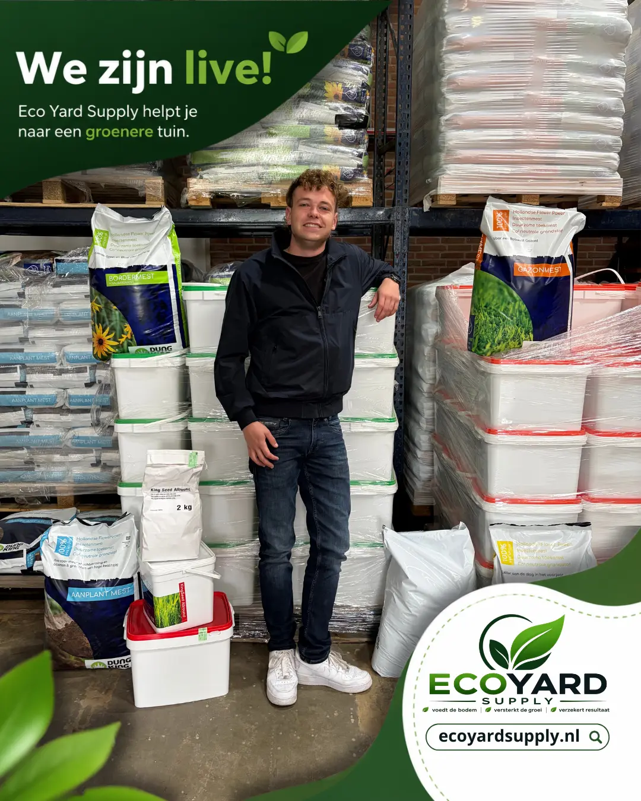

Dungking-leverancier in Noord-Brabant
Dungking meststoffen op basis van insectenmest
Actief in Noord-Brabant
Eco Yard Supply levert Dungking meststoffen en toepassingsadvies aan hoveniers en particuliere tuinliefhebbers in Noord-Brabant.
Eco Yard Supply levert doelgerichte voeding voor gazons, borders en nieuwe aanplant en geeft praktisch advies over productkeuze, dosering en het juiste toepassingsmoment.
Lees wat insectenmest is en welk product past
Bevordert gezonde groei
Praktisch toepasbaar
Over Eco Yard Supply
Persoonlijk advies voor gerichte tuingroei
Eco Yard Supply helpt hoveniers en particuliere tuinliefhebbers in Noord-Brabant met organische meststoffen voor bodem, gazon, borders en aanplant. We denken mee over productkeuze, dosering en toepassing, met aandacht voor een gezonde bodem en langdurige plantengroei.
Of het nu gaat om een professioneel groenproject of een particuliere tuin: vanuit Landhorst helpen we je een passende bemestingsoplossing te kiezen.
Waar we op sturen
- Advies op maat voor bodem, gazon en aanplant
- Productkeuze op basis van toepassing en seizoen
- Voor professional en particulier in Noord-Brabant bereikbaar
Producten
Meststoffen, aanplantgrond en zaden
Bekijk Dungking meststoffen, Vitalmix aanplantgrond en KingSeed graszaad, met productinformatie en directe contactmogelijkheden voor bestelling of advies.

Dungking Startersmest
Voor gazons en borders in het vroege voorjaar. De uitgebalanceerde samenstelling ondersteunt een krachtige start aan het begin van het seizoen.
Lees meer
Dungking Gazonmest
Voor een sterk, dicht en dieper geworteld gazon. Een goed gevoede grasmat herstelt beter en laat minder open ruimte voor mos en onkruid.
Lees meer
Dungking Bordermest + Najaarsmest
Voor borders, bloeiende planten, heesters, bomen, rozen en gazons. Ondersteunt de bloei in de zomer en helpt planten en gazons sterker het najaar en de winter in te gaan.
Lees meer
Dungking Aanplantmest
Organische aanplantmest met ten minste 80% insectenmest. Ondersteunt het bodemleven en de ontwikkeling van nieuwe wortels bij gazon, borders, bomen en hagen.
Lees meer
KingSeed Allround graszaad
Voor een nieuw gazon of doorzaai, in zon en halfschaduw. Bekijk de samenstelling, hoeveelheid per m² en het productblad.
Lees meerVitalmix aanplantgrond
Hoogwaardige aanplantgrond voor jouw aanplantproject. Bekijk de samenstelling en vraag advies over de toepassing en hoeveelheid.
Lees meerVoor hoveniers
Voor hoveniers die doelgericht willen bemesten
Eco Yard Supply denkt mee over toepassing, productkeuze en praktische inzet in tuinen en groenprojecten in Noord-Brabant. Deel oppervlak, planning en toepassing voor gerichter product- en hoeveelheidsadvies.
Bekijk de zakelijke mogelijkheden- Advies op maat
- Geschikt voor professioneel gebruik
- Keuze op basis van project en seizoen
- Praktisch toepasbaar in tuinen en groenprojecten
- Ook toegankelijk voor particuliere klanten
Praktisch tuinadvies
Van zoekvraag naar een onderbouwde aanpak
De kennisbank geeft directe antwoorden over tuin en gazon bemesten, insectenmest, rozen, tuingrond en nieuwe aanplant. Met doseertabellen, stappenplannen en links naar het passende product.
Veelgestelde vragen
Praktische informatie over advies, bezoek en levering
Waar is Eco Yard Supply actief?
Eco Yard Supply levert vanuit Landhorst Dungking meststoffen en praktisch advies aan hoveniers en particuliere tuinliefhebbers in Noord-Brabant. Afhalen en bezoek zijn alleen mogelijk op afspraak.
Wat is insectenmest?
Insectenmest is materiaal uit de insectenkweek. Dungking gebruikt het als organische basis of verrijking in meststoffen met een productspecifieke samenstelling en toepassing. Lees de volledige uitleg over insectenmest.
Kan ik langskomen bij Eco Yard Supply?
Een bezoek is alleen mogelijk op afspraak. Neem vooraf contact op of bel om een geschikt moment af te spreken.
Wanneer is Eco Yard Supply bereikbaar?
We zijn bereikbaar op doordeweekse dagen van 08:00 tot 20:00 en op zaterdag van 09:00 tot 17:00.
Voor wie zijn de Dungking producten geschikt?
De producten zijn bedoeld voor hoveniers, groenprofessionals en particuliere tuinliefhebbers. Kies per seizoen en toepassing het product voor gazon, border of nieuwe aanplant.
Contact
Advies nodig over de juiste bemesting?
Neem contact op voor advies, productinformatie of beschikbaarheid. Bezoek is alleen mogelijk op afspraak; bel of mail vooraf om een moment in te plannen.
- Adres
- Tweede Stichting 9
5445 NZ Landhorst - info@ecoyardsupply.nl
- Telefoon
- +31 6 26672878
- Regio
- Noord-Brabant
- Bezoek
- Alleen op afspraak
- Bereikbaar
- Maandag t/m vrijdag 08:00 - 20:00
Zaterdag 09:00 - 17:00